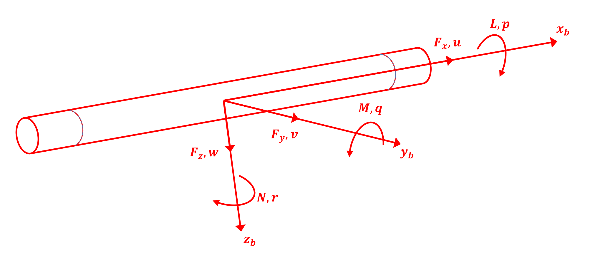

Kinematics#
The eqm module in c4dynamics provides a collection of
functions for integrating the equations of motion of data points and
rigid bodies in the three-dimensional space.
Background Material#
Introduction#
Motion models for points (particles) and rigid bodies in space and time are based on mathematical equations.
Three degrees of freedom models employ translational equations of motion. Six degrees of freedom models incorporate both translational and rotational equations of motion.
The inputs to the equations of motion are the forces and moments acting on the body; yielding body accelerations as outputs [MI].
Nomenclature and Convention#
Typically, the forces and moments on a body are resolved into components in the body coordinate system. Fig-1 shows the components of force, moment velocity, and angular rate of a body resolved in the body coordinate system. The six projections of the linear and angular velocity vectors on the moving body frame axes are the six degrees of freedom. The nomenclature and conventions for positive directions are as shown in Fig-1 and in the following Table:

Fig-1: Forces, velocities, moments, and angular rates in body reference frame#
Axis |
Force along axis |
Moment about axis |
Linear velocity |
Angular displacement |
Angular velocity |
Moment of Inertia |
|---|---|---|---|---|---|---|
\(x_b\) |
\({F_x}_b\) |
\(L\) |
\(u\) |
\(\varphi\) |
\(p\) |
\(I_{xx}\) |
\(y_b\) |
\({F_y}_b\) |
\(M\) |
\(v\) |
\(\theta\) |
\(q\) |
\(I_{yy}\) |
\(z_b\) |
\({F_z}_b\) |
\(N\) |
\(w\) |
\(\psi\) |
\(r\) |
\(I_{zz}\) |
The position of the mass center of the body is given by its Cartesian coordinates expressed in an inertial frame of reference, such as the fixed-earth frame \((x, y, z)\).
The body’s angular orientation is defined by three rotations \((\psi, \theta, \varphi)\) relative to the inertial frame of reference. These are called Euler rotations, and the order of the successive rotations is important. Starting with the body coordinate frame aligned with the earth coordinate frame, the adopted order here is 3-2-1, i.e.:
Rotate the body frame about the \(z_b\) axis through the heading angle \(\psi\),
Rotate about the \(y_b\) axis through the pitch angle \(\theta\), and
Rotate about the \(x_b\) axis through the roll angle \(\varphi\)
The total inertial velocity \(V\) has components \(u, v\), and \(w\) on the body frame axes, and \((v_x, v_y, v_z)\) on the earth-frame axes.
Rotation Matrix Convention#
The relation between the body frame and the reference frame is described by a Direction Cosine Matrix (DCM), a 3x3 rotation matrix. c4dynamics names rotation matrices by two letters, which state the direction of the transformation:
Where \(R\) stands for the reference (inertial, e.g. earth) frame and \(B\) stands for the body frame. Read from right to left, \([BR]\) takes a vector that is expressed in \(R\) and returns the same vector expressed in \(B\):
The matrix is orthonormal, hence its inverse is its transpose, and the opposite direction is given by:
The rotation matrices are passive, i.e. they rotate the frame of coordinates rather than the vector. The vector itself is unchanged; only the frame in which its components are expressed changes.
With this naming, a chain of transformations is composed by cancelling adjacent letters. For example, for three frames \(A, B, C\):
For the 3-2-1 Euler rotations defined above, the matrix from the reference frame to the body frame is a product of three elementary rotations, where the first rotation (\(\psi\) about \(z\)) is the rightmost:
Where \(R_x, R_y, R_z\) are the elementary rotation matrices about \(x, y, z\), respectively (see the rotmat module below).
In the equations of motion, these matrices are used to move forces, moments, and velocities between the frames. For example, the translational equations below take the forces in the reference frame. A force that is given in the body frame, \(F_B\) (e.g. the thrust of a motor), is first rotated to the reference frame:
Similarly, the inertial velocity is resolved in the body frame by:
Both rigid body state objects, rigidbody
and quatbody, provide their current
rotation matrices as the properties
BR and
RB.
Newton’s Second Law#
Newton’s second law of motion establishes the foundational equation governing the relationship among force, mass, and acceleration.
in the context of Newton’s second law, the force \((F)\) acting on an object is the derivative of its momentum \((m \cdot v)\) with respect to time \((t)\):
Where:
\(F\) is the total force acting on the object
\(m\) is the mass of the object
\(v\) is the velocity
\(t\) is time
This equation yields the final form of the equations of linear motion. In the final form, acceleration is represented by the rate of change of the velocity:
Where:
\(F\) is the total force acting on the object
\(m\) is the mass of the object
\(\dot{v}\) is the acceleration of the object
A direct extension of Newton’s second law to rotational motion reveals that the moment of force (torque) on a body about a given axis equals the time rate of change of the angular momentum of the paricle about that axis.
Where:
\(M\) is the total moment (torque) acting on the object
\(h\) is the angular momentum vector of the object
Hence, the final form of the equations of angular motion is given by:
Where:
\(M\) is the total moment (torque) acting on the object
\([I]\) is the inertia matrix of the body relative to the axis of rotation
\(\dot{\omega}\) is the absolute angular acceleration vector of the body
Translational Equations of Motion#
The basis of the translational equation of motion was introduced above. The usual procedure used to solve this equation is to sum the external forces \(F\) acting on the body, express them in an inertial frame, and substitute \(F\) into the equation. Once the acceleration, namely the forces divided by the mass, is expressed in inertial coordinates, it is integrated twice to yield the translational displacement.
Where:
\(dx, dy, dz\) are the changes in position in the \(x, y, z\) inertial directions, respectively
\(dv_x, dv_y, dv_z\) are the changes in velocity in the \(x, y, z\) inertial directions, respectively
\(v_x, v_y, v_z\) are the velocities in the \(x, y, z\) inertial directions, respectively
\(f[0], f[1], f[2]\) are the input force components in the \(x, y, z\) inertial directions, respectively
\(m\) is the mass of the body.
These equations describe the dynamics of a datapoint in three-dimensional space (3DOF). Which is the rate of change of position \((x, y, z)\) with respect to time equals to the velocity, and the rate of change of velocity \((v_x, v_y, v_z)\) with respect to time equals to the force divided by the mass \((m)\).
Rotational Equations of Motion#
As mentioned earlier, the rotational analog of Newton’s law describes the relationship between torque, moment of inertia, and angular acceleration. We also saw that a double integration on the translational acceleration produces the change of the body in position.
However, the angular accelerations are typically expressed with respect to a body frame and must be adjusted in order to produce the attitude of the body. For that purpose we introduced the euler angles (see Nomenclature and Conventions) which describe the body attitude with respect to an inertial frame of reference.
The orientation of the body reference frame is specified by the three Euler angles, \(\psi, \theta, \varphi\).
As a rigid body changes its orientation in space, the Euler angles change. The rates of change of the Euler angles are related to the angular rates \((p, q, r)\) of the body frame.
The rate of change of the Euler angles together with the rotational analog of Newton’s law provide the set of differential equations that describe the equations governing the motion of a rigid body:
Where:
\(d\varphi, d\theta, d\psi\) are the changes in Euler roll, Euler pitch, and Euler yaw angles, respectively
\(dp, dq, dr\) are the changes in body roll rate, pitch rate, and yaw rate, respectively
\(\varphi, \theta, \psi\) are the Euler roll, Euler pitch, and uler yaw angles, respectively
\(p, q, r\) are the body roll rate, pitch rate, and yaw rate, respcetively
\(M[0], M[1], M[2]\) are the input moment of force components about the \(x, y, z\) in the body direction, respectively
\(I_{xx}, I_{yy}, I_{zz}\) are the moments of inertia about the \(x, y,\) and \(z\) in body direction, respectively
These equations describe the angular dynamics of a rigid body. Together with the equations that describe the translational motion of the body they form the six-dimensional motion in space (6DOF).
Quaternion Kinematics#
The Euler angles singularity
The Euler angles rates above contain the terms \(tan(\theta)\) and \(1 / cos(\theta)\). As the pitch angle approaches \(\theta = \pm 90°\), these terms grow without bound and the equations become singular. At this attitude the roll axis and the yaw axis are aligned, \(\varphi\) and \(\psi\) describe the same rotation, and they are not uniquely defined. This phenomenon is known as gimbal lock.
Any set of three angles has such a singular attitude. For vehicles that never approach it, such as a transport aircraft in level flight, the Euler angles are a natural and intuitive choice. Agile vehicles, however, such as drones performing flips, aerobatic aircraft, missiles in a vertical launch, or tumbling spacecraft, may reach any attitude. For those, the attitude is better represented by a quaternion [DI].
The attitude quaternion
According to Euler’s rotation theorem, any attitude can be reached from the reference frame by a single rotation through an angle \(\alpha\) about a unit axis \(n = [n_x, n_y, n_z]\). The attitude quaternion encodes this rotation by four parameters:
Where:
\(q_w\) is the scalar part of the quaternion
\(q_x, q_y, q_z\) are the vector part of the quaternion
c4dynamics uses the scalar-first (Hamilton) convention.
Four parameters describe three degrees of freedom, therefore the quaternion is subject to one constraint. An attitude quaternion is a unit quaternion:
Note that \(q\) and \(-q\) represent the same attitude (a rotation of \(\alpha\) about \(n\) equals a rotation of \(\alpha - 360°\) about the same axis).
Relation to the Euler angles
The quaternion of the attitude that is defined by the 3-2-1 Euler angles \((\psi, \theta, \varphi)\) is given by:
where \(c \equiv cos\) and \(s \equiv sin\).
The inverse relation, from a quaternion to the Euler angles, is given by:
The extracted Euler angles are, of course, still singular at \(\theta = \pm 90°\). The quaternion itself is not. It is therefore common to propagate the quaternion and to compute the Euler angles only for presentation.
The rotation matrix from the reference frame to the body frame, \([BR]\) (see Rotation Matrix Convention), is given in terms of the quaternion by the following matrix, which is identical to the matrix of the 3-2-1 Euler angles of the same attitude:
The quaternion rates
The rate of change of the attitude quaternion is related to the angular rates \((p, q, r)\) of the body frame by the quaternion product (\(\otimes\)) of the quaternion and the angular velocity vector:
Or equivalently, in a matrix form:
Compared to the Euler angles rates, the quaternion rates:
Contain no trigonometric functions and no division, and are therefore free of singularities at any attitude.
Are linear in the quaternion components, which makes them cheap to evaluate and well behaved in numerical integration.
Numerical integration, however, does not preserve the unit norm exactly. Small errors accumulate, and the quaternion drifts from a unit quaternion. A standard remedy is to normalize the quaternion after each integration step:
The quaternion equations of motion
Replacing the Euler angles rates by the quaternion rates yields the quaternion form of the rotational equations of motion. The angular rates equations remain unchanged:
Where:
\(dq_w, dq_x, dq_y, dq_z\) are the changes in the attitude quaternion components
\(q_w, q_x, q_y, q_z\) are the attitude quaternion components
the rest of the variables are as defined for the Euler angles equations above.
Note the two different meanings of the symbol \(q\): the quaternion \(q = [q_w, q_x, q_y, q_z]\), and the pitch rate \(q\), the second component of the angular rates \((p, q, r)\).
Together with the translational equations, these equations form a singularity-free 6DOF model with 13 state variables:
In c4dynamics, this model is implemented by the
quatbody state object,
whose equations of motion are given by
eqm6q and integrated by
int6q.
The Euler angles model is implemented by the
rigidbody state object
with eqm6 and
int6.
Away from the singularity, both models produce the same motion.
Quadcopter Equations of Motion#
The 6DOF equations above take the forces and the moments as inputs.
For a quadcopter, these come from four rotors, aerodynamic drag, and gravity.
quadforces computes them, and
quadeqm passes them through the
rigid body equations: the Euler angles model of
eqm6 for a 12-state vector,
or the quaternion model of eqm6q
for a 13-state vector.
Frames
The model supports the two common pairs of an inertial frame and a body frame. Both use the 3-2-1 rotation of the convention above, so the body-from-inertial matrix is \([BI]\) with no extra rotation:
|
Inertial frame |
Body frame |
\(s\) |
|---|---|---|---|
|
\(x\) north, \(y\) east, \(z\) down |
\(x\) forward, \(y\) right, \(z\) down (FRD) |
\(-1\) |
|
\(x\) east, \(y\) north, \(z\) up |
\(x\) forward, \(y\) left, \(z\) up (FLU) |
\(+1\) |
The sign \(s\) is the direction of up along the body \(z\) axis. It appears wherever the model depends on the frame: the rotors thrust along \(s \cdot z_b\), and gravity acts along \(-s \cdot z\).
Rotors
Rotor \(i\) at the body position \((x_i, y_i)\) spins at \(\Omega_i\) in the direction \(d_i\) (\(+1\) counterclockwise seen from above, \(-1\) clockwise). It produces a thrust and a reaction torque:
The default rotor layout is an \(X\) configuration with the moment arm \(l\), in the motor order front-right, rear-left, front-left, rear-right, and \(d = [1, 1, -1, -1]\). Any other layout is given by explicit rotor positions and directions.
Forces
The body force is the total thrust along the body up axis and a linear drag that opposes the body velocity relative to the air:
The force in the inertial frame, which enters the translational equations of motion, adds gravity:
\(F_b / m\) is the specific force, i.e. what an accelerometer at the center of mass measures.
Moments
The thrust of each rotor acts at its position and produces roll and pitch moments. The reaction torques produce the yaw moment: a counterclockwise rotor turns the body clockwise seen from above. A rotational drag opposes the angular rates, and the angular momentum of the rotors, \(h = s \cdot I_R \cdot \sum d_i \cdot \Omega_i\) along the body \(z\) axis, adds a gyroscopic coupling \(-\omega \times h\):
Where:
\(k_T, k_Q\) are the rotor thrust and torque coefficients
\(A_x, A_y, A_z\) are the linear drag coefficients along the body axes
\(A_r\) is the rotational drag coefficient
\(I_R\) is the rotor moment of inertia
\(V, V_{wind}\) are the inertial velocity of the body and the wind velocity
\(m, g\) are the mass and the gravity acceleration
the rest of the variables are as defined above.
\(F\) and \(M\) are the inputs of the translational and the rotational equations of motion of the previous sections.
Integration
quadeqm has the signature of
scipy.integrate.solve_ivp. The vehicle parameters are attributes of the
state object, and the rotor speeds are held constant over a step:
from scipy.integrate import solve_ivp
from c4dynamics.models.quad import default_quad_config
quad = c4d.rigidbody()
for k, v in default_quad_config().items():
setattr(quad, k, v)
sol = solve_ivp(c4d.eqm.quadeqm, [t, t + dt], quad.X, args = (quad, rotor_speeds, 'ENU'))
quad.X = sol.y[:, -1]
A quatbody instead of a
rigidbody selects the quaternion model.
The Cascade-PID
and the EKF
quadcopter examples fly this model.
The rotmat Module#
The rotmat module implements the rotation operations
described on this page, following the convention above.
All the angles are in radians, unless stated otherwise.
Function |
Description |
|---|---|
Elementary rotation matrices \(R_x, R_y, R_z\): a frame rotation through an angle about the \(x, y\), or \(z\) axis |
|
\([BR]\) of the 3-2-1 Euler angles, \(R_x(\varphi) \cdot R_y(\theta) \cdot R_z(\psi)\) |
|
The 3-2-1 Euler angles of a \([BR]\) matrix (returned in degrees) |
|
The attitude quaternion of the 3-2-1 Euler angles |
|
The 3-2-1 Euler angles of an attitude quaternion (also for an array of quaternions) |
|
\([BR]\) of an attitude quaternion |
|
Animates the attitude histories of a rigid body with a 3D model |
To get \([RB]\) from any of the functions above, transpose the result.
Examples
Import c4dynamics:
>>> import c4dynamics as c4d
A frame that is rotated by \(90°\) about \(z\). The \(x\) axis of the reference frame is the \(-y\) axis of the rotated frame:
>>> c4d.rotmat.rotz(90 * c4d.d2r) @ [1, 0, 0]
[0 -1 0]
A body with heading \(\psi = 90°\) and pitch \(\theta = 30°\). \([BR]\) expresses the reference \(x\) axis in body coordinates, and \([RB] = [BR]^T\) expresses the body \(x\) axis (the nose) in reference coordinates:
>>> BR = c4d.rotmat.dcm321(phi = 0, theta = 30 * c4d.d2r, psi = 90 * c4d.d2r)
>>> BR @ [1, 0, 0]
[0 -1 0]
>>> BR.T @ [1, 0, 0]
[0 0.866 -0.5]
Going back from the matrix to the Euler angles (in degrees):
>>> c4d.rotmat.dcm321euler(BR)
(0 30 90)
The same attitude as a quaternion. Its rotation matrix is identical to the one of the Euler angles, and the Euler angles are recovered from it:
>>> q = c4d.rotmat.euler2quat(phi = 0, theta = 30 * c4d.d2r, psi = 90 * c4d.d2r)
>>> q
[0.683 -0.183 0.183 0.683]
>>> c4d.rotmat.quat2dcm(q) @ [1, 0, 0]
[0 -1 0]
>>> c4d.rotmat.quat2euler(q) * c4d.r2d
[0 30 90]
The state objects use these functions to provide their rotation matrices.
rigidbody computes
\([BR]\) by dcm321, and
quatbody by
quat2dcm:
>>> rb = c4d.rigidbody(theta = 30 * c4d.d2r, psi = 90 * c4d.d2r)
>>> rb.RB @ [1, 0, 0]
[0 0.866 -0.5]
For the background material on rotation matrices, Euler angles orders, and the right hand frame convention, see the Rigid Body Transformations concept page.
References#
Examples#
For examples, see the various functions.
See Also#
Translational motion derivatives of a data point in three-dimensional space |
|
Translational and rotational motion derivatives of a rigid body in three-dimensional space |
|
A step integration of the equations of translational motion |
|
A step integration of the equations of translational and rotational motion |
|
Translational and rotational motion derivatives of a rigid body with a quaternion attitude |
|
A step integration of the equations of translational and rotational motion with a quaternion attitude |
|
Quadcopter equations of motion (rotor forces and moments through |
|
A rigid body state object with a quaternion attitude |
|
Conversions between quaternions, Euler angles, and DCMs |
|
Rotation matrices and rotational operations |
|
Background material on rotation matrices and frame conventions |